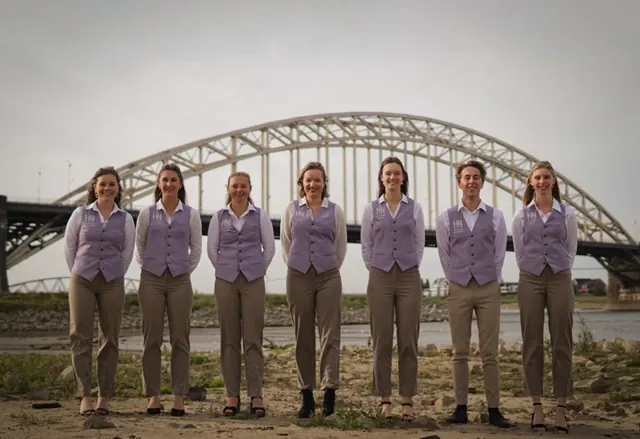
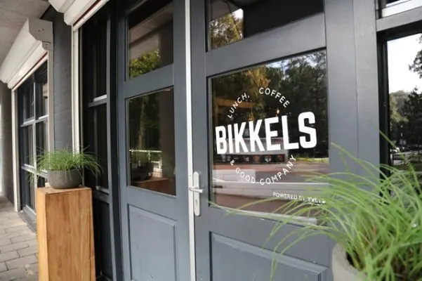

Nieuws ·
Happietaria opent bij Bikkels in het Goffertstadion

Happietaria is hèt pop-up restaurant voor het goede doel, en dit jaar zullen haar deuren geopend worden bij Bikkels in het Goffertstadion! Van 1 april t/m 10 mei zijn er zo veel mogelijk gasten welkom om €30.000 op te halen voor veilig drinkwater in Oeganda.

Happietaria wordt dit jaar voor de 13e keer opgezet in Nijmegen. Het bestuur bestaat uit zeven christelijke studenten, die verantwoordelijk zijn voor alles rondom het opzetten van het restaurant: van locatie tot menu, en van medewerkers tot sponsoring. Samen met vele andere vrijwilligers zullen zij het restaurant draaiende houden.
Doordat in Nijmegen Happietaria haar deuren heeft geopend, gaat er via de organisatie Tearfund geld naar Oeganda om voor verbeterde watervoorzieningen te zorgen. In samenwerking met lokale kerken en partners wordt er gezorgd voor waterreservoirs, voorlichtingen en rampenpreventie.
Op de menukaart van Happietaria zijn allerlei gerechten te vinden, zoals de typische Happieburger en Oegandese curry. Bij het restaurant kun je niet alleen lekker eten voor een lage prijs, maar door jouw happie eten draag je ook nog eens bij aan het creëren van een betere wereld, aangezien de gehele opbrengst naar het goede doel gaat. We hopen jou terug te zien!
Meer informatie, reserveren of doneren: happietaria.nl/nijmegen